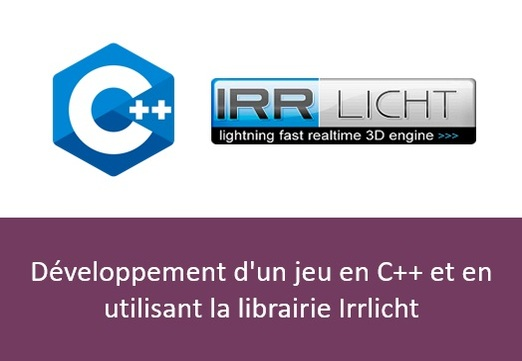
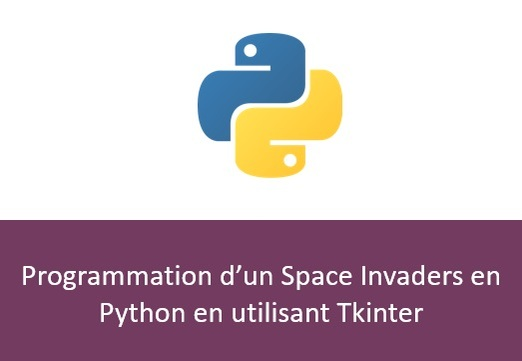
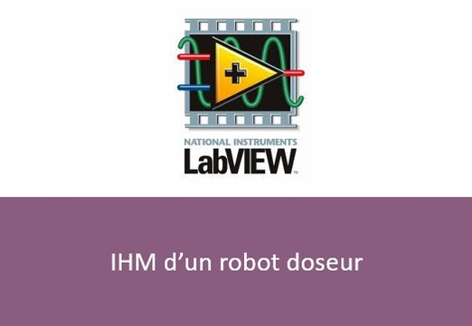
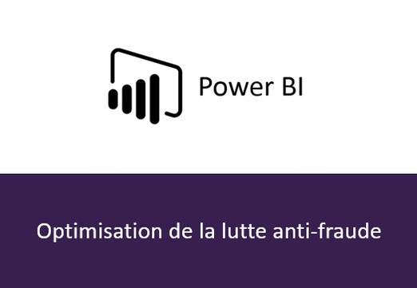
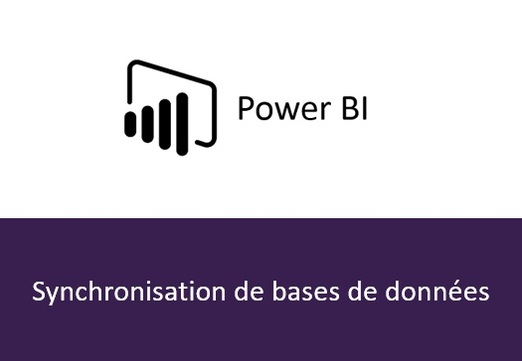
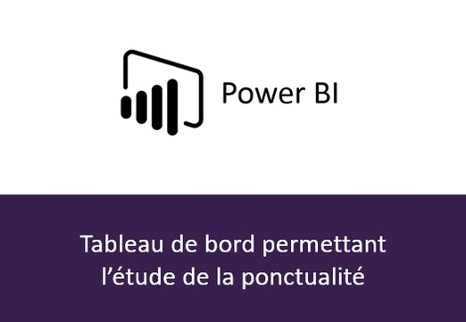
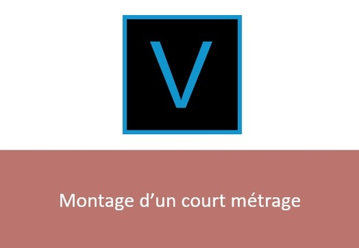

Je travaille actuellement sur l'élaboration d'un jeu mobile en collaboration avec 3 trois camarades d'école d'ingénieur. Il est encore en développement et ne verra pas le jour avant quelques mois. Il sera ensuite disponible sur toutes les plateformes de téléchargement Android et iOS.

Le cursus de majeure Image de mon école d’ingénieur avait la particularité d’avoir un module Jeux vidéo. Ce module se déroulait sous forme de projet et avait pour objectif d’avoir sur un jeu fonctionnel. Ainsi, j’ai pu développer un FPS sous à partir de la librairie Irrlicht et du langage C++. .
Après avoir travaillé sur plusieurs TP d’OpenGL, l’objectif était d’élaborer un jeu fonctionnel en utilisant les connaissances assimilées. J’ai pu ainsi codée un jeu en 3D où un vaisseau spatial devait éviter des obstacles au sein d’une grotte. Plusieurs fonctionnalités ont été implémentées (missiles, boost …).
Durant mon temps libre, j’ai eu l’occasion de participer à la conception et à la personnalisation d'un serveur de jeu GTA RP. En s'inspirant des serveurs existants, nous avons ainsi pu codés les fichiers nécessaires à son bon fonctionnement. Une fois achevé, nous avons pu le mettre en ligne afin qu'il soit accessible par des milliers de joueurs.

Le module d’apprentissage du langage Python a abouti sur la programmation d’un Space Invaders. Celui-ci repose sur les mêmes principes de jeu que l’original, c’est-à-dire détruire les ennemis sans se faire toucher par leurs projectiles. La bibliothèque Tkinter a notamment été utilisée afin de gérer l’interface graphique.
Durant le projet de majeure Image de 5ème année, j'ai travaillé d'une part sur le traitement d'un flux vidéo afin de permettre la détection et l'identification d'une carte. D'autre part, j'ai calibré une caméra afin de récupérer la position et l'orientation de la carte. Enfin l'application mobile a été implémenté en utilisant la librairie Qt.
Afin de valider ma 4ème année d'école d'ingénieur, j'ai eu l'opportunité de réaliser un projet portant sur ma majeur (traitement d'image). J'ai ainsi implémenté un programme permettant de détecter la valeur d'une résistance à partir d'une photo de celle-ci (débruitage, rotation, segmentation, détection des couleurs).
Dans le cadre du projet de robot connecté de 4e année, j'étais en charge de coder le programme de détection d'obstacles. Celui-ci devait permettre de détecter la forme et la couleur d'un obstacle à partir d'une photographie. Notions utilisées : algorithmes de segmentation, morphologie mathématique, colorimétrie …
Le projet transversal de l’année 4 m’a permis de mettre en pratique mes connaissances en Java afin d’établir un échange de fichiers entre deux PC (un serveur et un client). Ainsi, le programmé implémentée permet d’assurer une communication automatique tout en suivant un protocole prédéfini.
À la suite du module de traitement du signal d’année 3, j'ai participé à la conception d'un programme de modulation et de démodulation d'un message vocal ainsi l'objectif était de dissimuler une information puis de pouvoir la retrouver.
Dans le cadre du projet transversal de 4ème année, l’une de mes missions était de faire transiter des données de manière synchrone entre deux cartes 8051 (un master et une slave). Il a donc fallu pour cela mettre en place une liaison SPI programmé grâce au langage C ainsi qu’à la datasheet de carte.

Dans le cadre du module de capteur intelligent, il était question d'élaborer une interface permettant de contrôler les différents capteurs (température, volume …) et d’afficher l’évolution de chaque variable. L’interface Labview ainsi implémentée permet ainsi de remplir ces fonctions et de sauvegarder les données sur les fichiers.
L'apprentissage du langage de programmation VHDL a abouti sur l'implémentation d'un chrono score celui-ci éteindre fragmenter en plusieurs étapes successives (implémentation du score, du chronomètre, de l’affichage …).
Avant l'élaboration de ce programme, aucune étude ne permettait de mettre en évidence le taux d’axe unique par roulement mais aussi par axe pur. Ainsi, ce projet a permis de fournir un puissant outil d'analyse la direction et aux différents pôles de l'entreprise.

À partir des données répertoriant les résultats générés par la lutte antifraude, il fallait pouvoir élaborer un programme permettant de prévoir les gares et horaires les plus rentables tout en prenant compte des nombreux paramètres (adaptation, type de journée …).

Dans l'optique de permettre aux managers de chaque site de pouvoir étudier la ponctualité au départ de leurs train, il était question de concevoir un tableau de bord. Ce projet avait pour objectif de garantir la synchronisation entre les données relevées et les outils d'analyses en gare.

Il était question dans ce projet d'élaborer un tableau de bord permettant à la Direction d'analyser des indices liés au bon fonctionnement de l'entreprise.
Afin d’élaborer les plans de garage, je suis passé par l’outil Nuance Power Advanced PDF. Celui-ci permet d’ajouter des objets, des éléments de formulaire, mais aussi des codes en JavaScript afin de créer des interactions entre tous les éléments.
Le projet transversal de l’année 4 m’a permis de mettre en pratique mes connaissances en Java afin d’établir un échange de fichiers entre deux PC (un serveur et un client). Ainsi, le programmé implémentée permet d’assurer une communication automatique tout en suivant un protocole prédéfini.
Au cours du module de programmation orientée objet, les différents travaux pratiques avaient pour objectif de concevoir à la conception d'une IHM présentant plusieurs espèces d'abeilles, leur environnement ainsi que les interactions entre chaque espèce.
Afin de faciliter la gestion de stock d’une entreprise, j’ai travaillé à l’élaboration d’un fichier Excel à base de macros. Plus précisément, le langage VBA a été utilisé afin d’implémenter des formulaires permettant de gérer de renseigner les matériaux entrants et sortants tout en actualisant le contenu des tables impliquées.

Dans le cadre du module d'espagnol de 4e année, j'ai eu l'occasion de participer à l'écriture et à la réalisation d'un court métrage en espagnol. Par ailleurs, je me suis occupé de montage du film. J'ai notamment fait appel au logiciel Vegas pro.